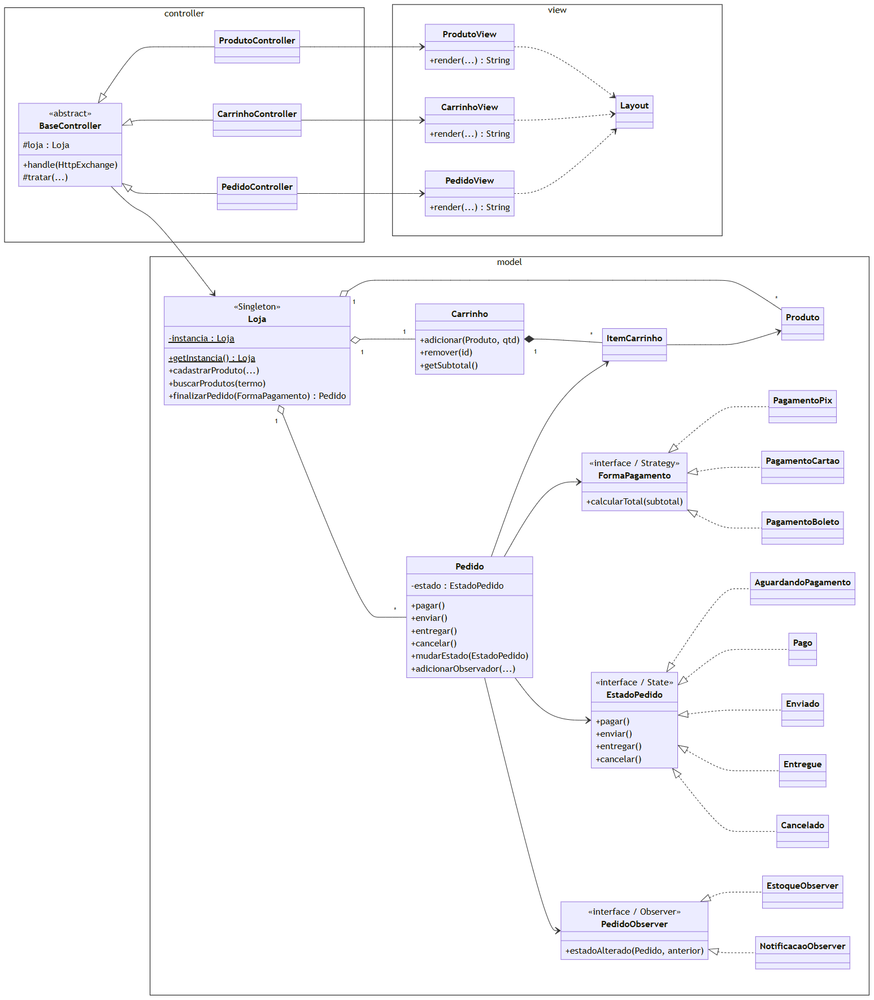

Engenharia e Arquitetura de Software · Avaliação A3 · Aluno: Gustavo Andrade
O tema escolhido foi um e-commerce de livraria. O objetivo é oferecer o fluxo completo de uma compra: o lojista cadastra livros, o cliente consulta o catálogo, monta o carrinho, escolhe a forma de pagamento, finaliza o pedido e acompanha seu estado até a entrega. A aplicação foi feita em Java 17+ sem bibliotecas externas, com interface web gerada pelo servidor HTTP embutido no JDK (com.sun.net.httpserver) e persistência em memória.
| Camada | Principais classes | Responsabilidade |
|---|---|---|
Modelloja.model | Loja, Produto, Carrinho, ItemCarrinho, Pedido e os subpacotes pagamento, estado e observer | Dados e regras de negócio: estoque, totais, criação do pedido e transições de estado. Não conhece HTTP nem HTML. |
Viewloja.view | Layout, ProdutoView, CarrinhoView, PedidoView | Recebem objetos do Model e geram o HTML das telas e formulários. Não alteram dados. |
Controllerloja.controller | BaseController, ProdutoController, CarrinhoController, PedidoController | Recebem as requisições, convertem e validam os parâmetros, acionam o Model e escolhem a View ou redirecionam com mensagem de sucesso/erro. |
| Padrão | Problema resolvido | Classes participantes | Justificativa |
|---|---|---|---|
| Singleton | Os três controllers precisam compartilhar os mesmos produtos, carrinho e pedidos guardados em memória. | Loja (construtor privado, getInstancia()) | Garante uma única fonte de dados, sem passar referências manualmente entre controllers. |
| Strategy | Cada forma de pagamento calcula o total de modo diferente (Pix −10%, Cartão integral, Boleto +R$ 3,00). | FormaPagamento, PagamentoPix, PagamentoCartao, PagamentoBoleto; cliente: Pedido | Evita if/else no cálculo; uma nova forma de pagamento é só uma nova classe. |
| State | As ações permitidas no pedido dependem do estado atual (não se entrega um pedido não pago). | EstadoPedido, AguardandoPagamento, Pago, Enviado, Entregue, Cancelado; contexto: Pedido | Cada estado decide suas transições; as inválidas lançam erro. As regras ficam isoladas e fáceis de estender. |
| Observer | Ao mudar de estado, outras partes precisam reagir (devolver estoque, avisar o cliente). | PedidoObserver, EstoqueObserver, NotificacaoObserver; sujeito: Pedido | O Pedido só avisa os observadores; ele não sabe o que cada um faz, o que reduz o acoplamento. |
BaseController, que concentra a leitura dos parâmetros, os redirecionamentos e o tratamento de erros, deixando cada controller curto.Carrinho, Loja, Produto), e o controller ficou só com a validação de formato dos campos.EstadoPedido recusam a ação por padrão, e cada estado libera apenas o que é permitido. Isso eliminou condicionais espalhadas.Pedido ao controle de estoque.O funcionamento foi verificado com um teste automatizado de ponta a ponta em Playwright (tests/fluxo-completo.js), que usa a aplicação pelo navegador como um usuário real e faz 35 verificações: cadastro, busca, validações, carrinho, totais das três formas de pagamento, finalização, baixa de estoque, todas as transições de estado, transições proibidas, devolução de estoque ao cancelar, notificações, escape de HTML e página 404. Todas passaram. Também foram feitos testes manuais pelas telas.
Limitações: os dados ficam em memória e são perdidos ao reiniciar; há um único carrinho, sem login nem múltiplos clientes; o pagamento é simulado (o usuário clica em “pagar”).

Pacotes controller, view e model (MVC) e as classes dos padrões Singleton (Loja), Strategy (FormaPagamento), State (EstadoPedido) e Observer (PedidoObserver).